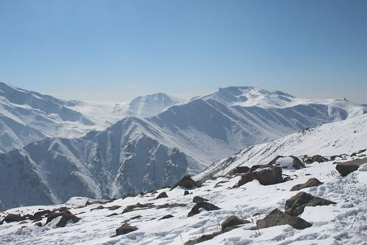

Explore Gulmarg
Gulmarg is a breathtaking hill station famous for its snow-covered mountains, lush meadows, and the iconic Gondola ride, making it a paradise for nature lovers and adventure seekers.



Apharwat Peak
Apharwat Peak is a breathtaking mountain near Gulmarg, known for its year-round snow, panoramic Himalayan views, and thrilling skiing adventures.
Gulmarg Gondola
The Gulmarg Gondola is an iconic cable car ride that takes visitors to the top of the mountain, offering stunning views of the surrounding snow-capped peaks and valleys.
St. Mary's Church
St. Mary's Church is a historic church in Gulmarg, known for its beautiful architecture and serene atmosphere, offering a peaceful retreat for visitors.